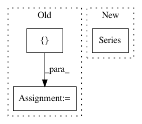

2999e509688a82f8be65600727a5922b5739822b,conceptnet5/vectors/evaluation/wordsim.py,,compute_semeval_score,#,309
Before Change
low_harmonic_mean = float("NaN")
high_harmonic_mean = float("NaN")
else:
acc_harmonic_mean = hmean([spearman_score["acc"], pearson_score["acc"]])
low_harmonic_mean = hmean([spearman_score["low"], pearson_score["low"]])
high_harmonic_mean = hmean([spearman_score["high"], pearson_score["high"]])
return pd.Series(
After Change
else:
scores.append(hmean([spearman_score[interval], pearson_score[interval]]))
return pd.Series(
scores,
index=intervals
)
def evaluate_semeval_monolingual(vectors, lang):
In pattern: SUPERPATTERN
Frequency: 4
Non-data size: 3
Instances
Project Name: commonsense/conceptnet5
Commit Name: 2999e509688a82f8be65600727a5922b5739822b
Time: 2017-03-08
Author: joanna.teresa.duda@gmail.com
File Name: conceptnet5/vectors/evaluation/wordsim.py
Class Name:
Method Name: compute_semeval_score
Project Name: scikit-learn-contrib/categorical-encoding
Commit Name: 6b3126ca9ba2dd8eddb69e6c4f562ef4f006db70
Time: 2018-10-21
Author: jcastaldo08@gmail.com
File Name: category_encoders/tests/test_one_hot.py
Class Name: TestOneHotEncoderTestCase
Method Name: test_fit_transform_HaveColumnWithMissingAsValue_ExpectCorrectColumns
Project Name: cesium-ml/cesium
Commit Name: 2ab1119596b420cc696a783271d617562ccf7e28
Time: 2017-03-29
Author: brettnaul@gmail.com
File Name: cesium/featurize.py
Class Name:
Method Name: featurize_single_ts
Project Name: cesium-ml/cesium
Commit Name: 586b49b07574f7812101248c94d73ef1fb2a5c12
Time: 2015-11-11
Author: brettnaul@gmail.com
File Name: mltsp/tests/test_predict.py
Class Name:
Method Name: test_add_to_predict_results_dict